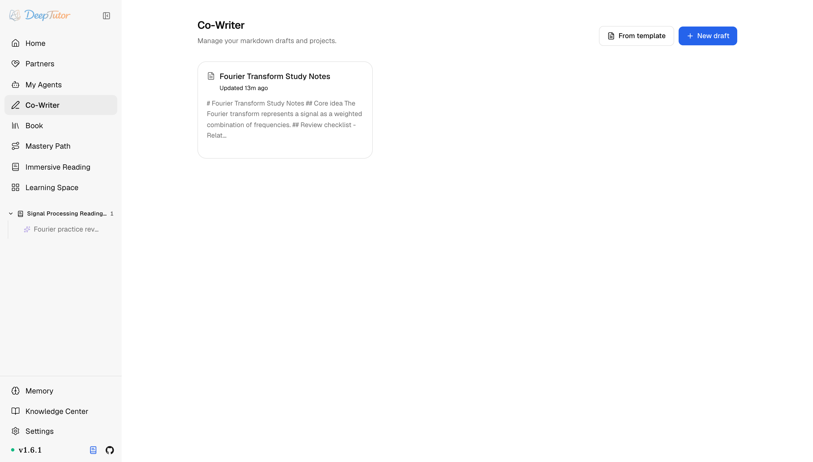
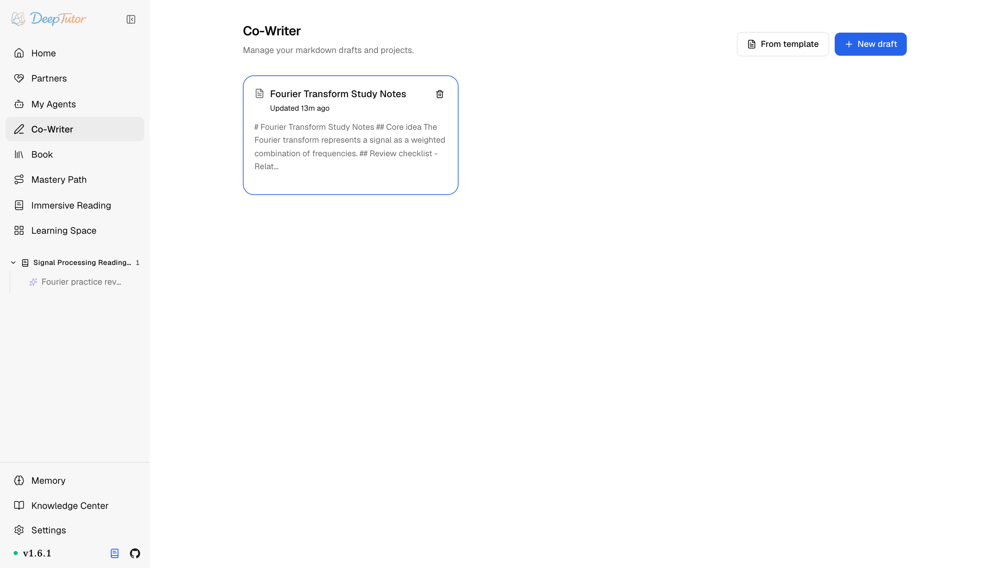

探索 DeepTutor智慧寫作
4 個按鈕把草稿改到能交！DeepTutor 智慧寫作，選區級 AI 修改無需折騰，Word 一鍵匯入！｜零度解說
支援選區與全文 AI 編輯的 Markdown 工作台——可基於知識庫或網路錨定，並把結果直接應用到草稿。
原文連結：https://docs.deeptutor.info/zh-cn/explore/co-writer/
寫草稿這件事，到底能讓 AI 幫到什麼程度？
最近我把 DeepTutor 的智慧寫作（Co-Writer）當主力編輯器用了幾天，筆記、報告、教學都在裡面寫。
它就是一個 Markdown 工作台：選中一段做外科手術式修改，或者對全文跑 Rewrite、Shorten、Expand 與 Auto Mark 這 4 個操作，AI 結果立即替換，反悔還有 Undo 備援。
但是問題來了，很多人一聽到「AI 直接改我的稿子」，基本就放棄了：改砸了怎麼辦？
先別急，它只攜帶你選中的那段加指令，絕不把整篇草稿發出去，改完不滿意一鍵退回。接下來我們就把入口、編輯器、AI 編輯和工作流全部過一遍。
入口在哪裡
從左側欄開啟 Co-Writer（或訪問 /co-writer）。
落地頁列出你的草稿；可用 New draft 新增、從 From template 開始，或用 Import Word 把 .docx 轉成草稿，Word 文件直接搬進來，這一步對總被要求交 Word 的朋友來說是真省事。

編輯器：左邊寫，右邊看
開啟一篇草稿，進入分欄工作區：左側是 Markdown 原始碼，右側是即時預覽。
數學公式用 KaTeX 渲染，圖表圍欄會被渲染成圖，因此你邊打字，預覽就邊忠實呈現成稿的樣子。

| 控制元件 | 作用 |
|---|---|
| Editor / Preview | 左側寫 Markdown；右側渲染標題、加粗、表格、程式碼、公式與圖表。 |
| Sync Scroll | 捲動時讓兩欄保持對齊。 |
| Export Markdown / Word | 把當前草稿下載成 Markdown 或 .docx 。 |
| Save to Notebook | 把當前草稿複製進可複用的筆記本。 |
| Full Draft | 開啟全文 Rewrite、Shorten、Expand 與 Auto Mark 操作。 |
AI 編輯：可錨定、且外科手術式
選中文字即可 rewrite、expand 或 shorten。
請求只攜帶選區、指令、模式、檢索工具與可選知識庫（KB）名稱，絕不傳送周圍草稿；KB 或網路結果仍可為替換內容提供依據。
它特別適合這幾種場景：
收緊解釋而不改變章節結構，
把要點擴寫成教學文字，
在存入筆記本前精簡草稿，
用 KB 或網路來源支撐論斷。
Full Draft 會對全文執行這些操作，Auto Mark 則新增註解。選區與全文結果都會立即落地，請就地檢查，必要時用 Undo 還原。
看到這裡擔心改砸的朋友可以放心：結果隨時可退回，這個改稿體驗用下來真的爽歪歪。
推薦工作流
1、先用 Markdown 粗略起草。
2、選中段落，或開啟 Full Draft 做全文處理。
3、執行 Rewrite 、 Expand 或 Shorten ，需要時用 KB 或網路錨定； Auto Mark 為全文新增註解。
4、檢查已應用的結果，必要時使用 Undo 。
5、用 Markdown / Word 匯出，或存進 筆記本 。
儲存：草稿互相隔離
Co-Writer 文件存放在當前使用者的工作區下，因此多使用者部署裡每個使用者的草稿互相隔離。
夥伴可以使用從使用者資料庫複製來的筆記本/技能資源，但不會編輯使用者的 Co-Writer 草稿。
相關閱讀
使用過程遇到問題，歡迎在留言區留言，把報錯的完整日誌貼出來，我看到會回覆。